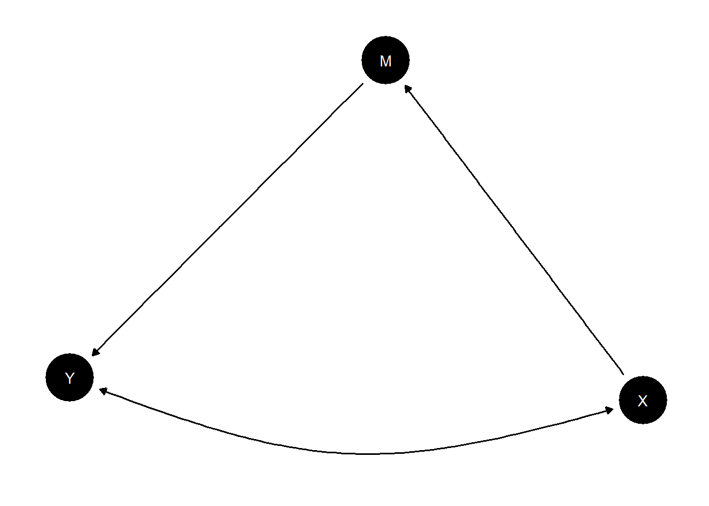
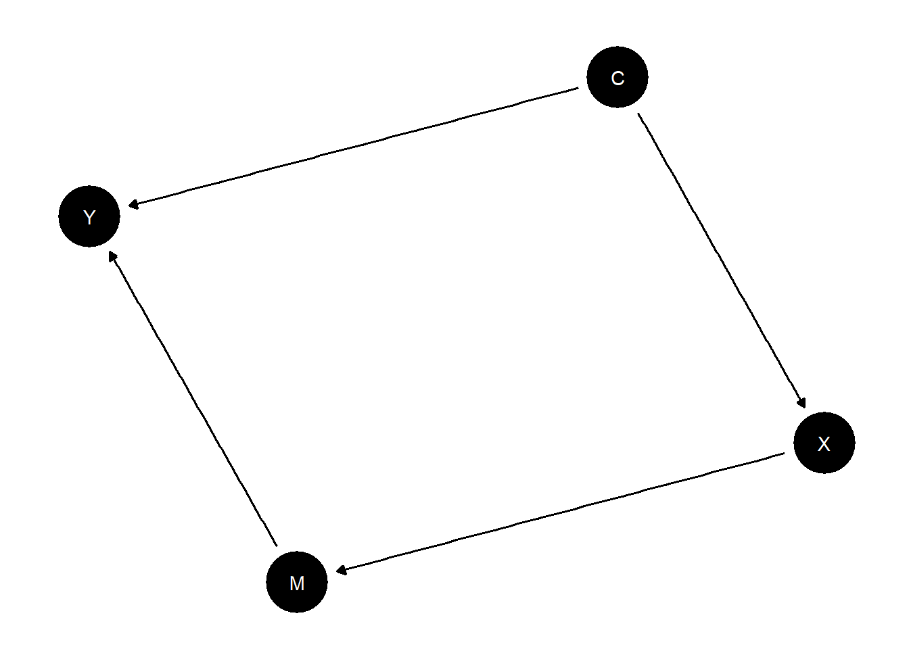

set.seed(123)design <-declare_model(N =1000,W =rbinom(N, size =1, prob =0.5), # confounder: W = political interest (high/low)X =rbinom(N, size =1, prob =ifelse(W ==1, 0.5, 0.2)), # treatment: X = informed about petition (yes/no)U =rnorm(N, mean =0, sd =1),potential_outcomes(Y ~ X + W + U, conditions =list(X =c(0, 1))) # example: Y = signing petition (probability) ) +declare_inquiry(ATE =mean(Y_X_1) -mean(Y_X_0)) +declare_assignment(X =complete_ra(N)) +declare_measurement(Y =reveal_outcomes(Y ~ X)) +declare_estimator(Y ~ X + U, inquiry ="ATE", label ="Y") +declare_estimator(Y ~ X + W + U, inquiry ="ATE", label ="Y_W_linear") +declare_estimator(Y ~ X * W + U, inquiry ="ATE", label ="Y_W_interact")design %>%run_design() %>%kable()
inquiry
estimand
estimator
term
estimate
std.error
statistic
p.value
conf.low
conf.high
df
outcome
ATE
1
Y
X
1.054061
0.0316242
3.333082e+01
0
0.9920036
1.116119
997
Y
ATE
1
Y_W_linear
X
1.000000
0.0000000
7.881779e+15
0
1.0000000
1.000000
996
Y
ATE
1
Y_W_interact
X
1.000000
0.0000000
6.099803e+15
0
1.0000000
1.000000
995
Y
4.4
Three conditions have to be met for the front door criterion to hold: 1. M completely mediates the effect of X on Y, i.e. all causal paths from X to Y go through M 2. There us no unblocked backdoor path from X to M 3. All backdoor paths from M to Y are blocked by X
make_model("X -> M -> Y <-> X") %>%plot()

Scenario 1: direct causal path between both X and Y
The second and third assumption seem to hold for the model; there is only one path from X to M and the backdoor path from M to Y is blocked by X (thus controlled for). However, there is a second direct pathway from X to Y, meaning that the first condition is violated.
With correlations of 0.9 between both X and M and M and Y, I would therefore argue that the causal effect cannot be identified. With perfect deterministic relationships between the variables (correlation = 1), though, I think that there cannot be a backdoor path between X and Y as there is no more variance that is not explained via the pathway through M.
make_model("X -> M -> Y <- C -> X") %>%plot()

Scenario 2: confounder causing both X and Y
Here, the front door criterion holds: The third condition is fulfilled because there is no causal path from X to Y other than the one through M.